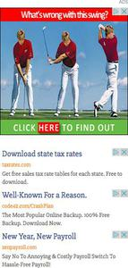

One of the sites I’m working on has a fair number of Google ads on most of the pages. They got to be annoying to see all the time. Not to mention Safari’s logging of console errors about not being able to load an iframe from google’s servers on localhost. Ugh.
So, I wrote some Rails’ middleware to replace the offending ad calls with innocous divs, but only in development mode.
It turns the output on the left, into the output on the right. Just enough to check placement, size, and data attributes.
To install this on your own site, grab the middleware, and save it in lib/google_ad_munger.rb, then add the following line to config/environments/development.rb:
config.middleware.use 'GoogleAdMunger'You may need to tweak the regular expressions to match your own needs.
 ––––––––> 
Much nicer.